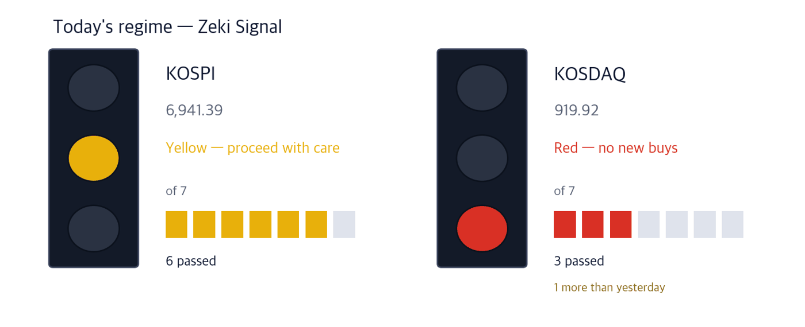

KOSPI 6,941.39 -0.89% | KOSDAQ 919.92 +2.98% | Zeki Signal Yellow |

Green favours buying, yellow says wait, red says hold off. The cells count how many of seven conditions are met - more cells mean the advance is broader. At the October 6 close the KOSPI meets 6 of 7 and reads yellow; the KOSDAQ meets 3 and reads red, 1 more than yesterday.
Wait — the stance the signal implies.
In Seoul on October 6 the KOSPI and KOSDAQ moved in opposite directions. The KOSPI fell 0.89% to 6,941.39, while the KOSDAQ rose 2.98% to 919.92. It was the KOSDAQ's first close above 900 since July 1. (Korea Economic Daily, Oct 7)
The chip equipment, biotech and battery sectors led the KOSDAQ. Foreign investors bought a net 109.8 billion won and institutions 121.5 billion won, while individuals sold a net 214.5 billion won. (Korea Economic Daily, Oct 7)
The KOSPI was held down by Samsung Electronics, which fell 1.09%, and SK Hynix, down 3.15%. Samsung reports preliminary third-quarter results on October 8. The brokers' average operating profit forecast has slipped from 113.99 trillion won to 106.94 trillion won in three months. (Maeil Business Newspaper, Oct 6)
In New York on October 5 the Nasdaq Composite rose 1.05% to a record 27,477.31 and the S&P 500 closed at 7,773.95. The 10-year Treasury yield rose to 5.31%, while WTI fell 2% to $89.25 a barrel. (Investor's Business Daily, Oct 5)
Here is what to do now, before Seoul opens on Wednesday.
① Look at KOSDAQ chip equipment makers. Jusung Engineering jumped 18.2% in a day to a new one-year high on volume 2.6 times its 50-day average.
② A battery materials supply deal has reached the price. POSCO Future M will supply 6 trillion won of cathode material to Samsung SDI. Both rose on October 6.
③ Samsung's results and an ETF reweighting both land on October 8. The KOSPI is held down until then.
The number is 106.94 trillion won, the brokers' average forecast for Samsung Electronics' third-quarter operating profit. It rose to 113.99 trillion won in August and has come down as the won strengthened. A figure above 100 trillion is still the likely outcome. (FnGuide data, Maeil Business Newspaper, Oct 6)
| Date | What to watch | What it changes |
|---|---|---|
| Wed Oct 7 | FOMC minutes (September 15–16 meeting; early Oct 8 Seoul time) | Shows whether members wanted more hikes; Treasury yields move first |
| Thu Oct 8 | Samsung Electronics' preliminary Q3 results and the regular reweighting of Korean equity ETFs | Shows whether profit reaches the forecast; the reweighting could release about 200 billion won of Samsung shares (Samsung Securities estimate) |
| Fri Oct 9 | Hangul Day holiday | Cuts the week to three sessions, October 6 to 8 |
On October 6 the KOSDAQ rose 2.98% as its largest chip equipment, biotech and battery stocks rose together. Chipmakers are spending more on plants, which raised hopes for equipment makers.
Jusung Engineering, which makes chip deposition equipment, overtook Ecopro BM to rank third on the KOSDAQ by market value. Brokers expect the KOSDAQ to stay stronger than the KOSPI in the fourth quarter. They say gains from Samsung Electronics and SK Hynix are already in the price, while profit forecasts for KOSDAQ companies should start rising next year. (Korea Economic Daily, Oct 7)
| Close | Day | Week | 20 sessions |
|---|---|---|---|
| 283,000 won | +18.16% | +36.06% | +68.45% |
| 3 months | Zeki Strength | From 1-yr high |
|---|---|---|
| +24.40% | 99 | 0.00% |
| Who | Jusung Engineering, a KOSDAQ maker of chip deposition equipment. |
| What | Closed at 283,000 won on October 6, up 18.16%. It rose 68.45% over 20 sessions to a new one-year high. |
| When | The October 6 close, which is its 52-week high. |
| Where | Listed on the KOSDAQ. It trades about 313.5bn won a day. |
| Why | More chipmaker spending on plants should mean more orders for deposition equipment. |
| How | Volume on October 6 was 2.57 times the 50-day average. Both groups were net buyers that day. |
POSCO Future M said on October 6 that it has signed a long-term supply contract with Samsung SDI worth 6 trillion won. Cathode material is the core part of a battery that stores the charge. The deal widens the range to lithium iron phosphate (LFP) cathodes, and the company expects volume to Samsung SDI to rise about 45%.
Both stocks rose on October 6. On the same day Ecopro rose 7.31% and Ecopro BM 11.41% on the KOSDAQ, so battery materials were strong together, helped by hopes for exports of energy storage systems to North America. (Korea Economic Daily, Oct 7)
| Close | Day | Week | 20 sessions |
|---|---|---|---|
| 209,000 won | +11.88% | +14.46% | +13.71% |
| 3 months | Zeki Strength | From 1-yr high |
|---|---|---|
| +27.75% | 76 | -29.39% |
| Who | POSCO Future M, a POSCO group maker of battery cathode and anode materials. |
| What | Closed at 209,000 won on October 6, up 11.88%, 29.4% below its one-year high of 296,000 won on May 7. |
| When | It announced the long-term supply contract with Samsung SDI on October 6. |
| Where | Listed on the main board. It trades about 60.4bn won a day. |
| Why | A wider range of products should lift volume to Samsung SDI about 45%, the company says. |
| How | Volume on October 6 was 1.90 times the 50-day average. Both groups were net buyers that day. |
| Close | Day | Week | 20 sessions |
|---|---|---|---|
| 577,000 won | +9.07% | +9.28% | +7.05% |
| 3 months | Zeki Strength | From 1-yr high |
|---|---|---|
| +22.64% | 91 | -18.96% |
| Who | Samsung SDI, a Samsung group maker of batteries for electric vehicles and energy storage. |
| What | Closed at 577,000 won on October 6, up 9.07%, 19.0% below its one-year high of 712,000 won on April 29. |
| When | The supply contract was announced on October 6. |
| Where | Listed on the main board. It trades about 171.5bn won a day. |
| Why | It secures cathode material over the long term from a supplier that is not a prohibited foreign entity (Non-PFE), which steadies its supply. |
| How | Volume on October 6 was 1.56 times the 50-day average. Both groups were net buyers that day. |
The National Pension Service raised its stakes in the insurance sector and cut the brokerage sector in the third quarter, reasoning that higher rates lift the investment income of insurers who put premiums mainly into bonds. Its stakes rose 1.03 points in DB Insurance and 1.06 points in Hanwha Life, and fell 1.10 points in Kiwoom Securities, 1.05 in Samsung Securities and 1.04 in Mirae Asset Securities. (Maeil Business Newspaper, Oct 6)
Prices did not follow. As of October 6, DB Insurance fell 9.8% and Hanwha Life 13.6% over 20 sessions. The trend points down, so we do not cover them as names today. The pension's stake changes also include trades by outside managers, so they are not one fund's call.
| Name | ①up 20d | ②Str. 90+ | ③For. buy | ④Inst. buy | Met | Weight |
|---|---|---|---|---|---|---|
| Jusung Engineering (036930) | O | O | O | O | 4/4 | Well grounded |
| POSCO Future M (003670) | O | X | X | O | 2/4 | Needs checking |
| Samsung SDI (006400) | O | O | O | X | 3/4 | Grounded |
The four columns ask: ① up over 20 sessions ② Zeki Strength 90 or higher ③ foreign net buying over 20 sessions ④ institutional net buying over 20 sessions. The count of O sets the weight of evidence. Chip equipment has both price and money behind it. In battery materials, prices rose after the contract, but foreign investors sold POSCO Future M and institutions sold Samsung SDI over 20 sessions.
| Name | Foreign / Inst, 20d | Volume | How to read it |
|---|---|---|---|
| Hanon Systems 018880 | F -7.0 · I +9.9 | 4.36x | Caution — Only institutions bought; foreigners sold |
| SFASemicon 036540 | F +15.0 · I -5.3 | 2.00x | Caution — Only foreigners bought; institutions sold |
| Woori Financial Group 316140 | F +18.3 · I +2.6 | 1.08x | Check✓ — Both bought, but on thin volume |
| TaihanFiberoptics 010170 | F +4.3 · I +0.8 | 0.77x | Check✓ — Both bought, but on thin volume |
| Korean Air Lines 003490 | F +8.5 · I +1.6 | 0.73x | Check✓ — Both bought, but on thin volume |
| SamsungHvyInd 010140 | F -8.5 · I -1.2 | 1.03x | Wait — Both sides selling, but volume has dried up |
| Daewoo Engineering & Construction 047040 | F -4.8 · I -2.9 | 0.76x | Wait — Both sides selling, but volume has dried up |
| Doosan Enerbility 034020 | F -7.0 · I -0.7 | 0.72x | Wait — Both sides selling, but volume has dried up |
| LG Display 034220 | F -7.6 · I -1.0 | 0.57x | Wait — Both sides selling, but volume has dried up |
| Netmarble 251270 | F -11.2 · I -0.2 | 0.42x | Wait — Both sides selling, but volume has dried up |
| Stock | Net shares, 20 days | Zeki Strength | 20 trading days | As of |
|---|---|---|---|---|
| Woori Financial Group 316140 | +18,301,153 | 70 | -3.5% | 10-06 |
| SFASemicon 036540 | +15,036,184 | 96 | +106.2% | 10-06 |
| Korean Air Lines 003490 | +8,487,956 | 77 | +7.2% | 10-06 |
| TaihanFiberoptics 010170 | +4,267,005 | 99 | +46.1% | 10-06 |
| Koh Young 098460 | +3,768,765 | 87 | +32.8% | 10-06 |
| Stock | Net shares, 20 days | Zeki Strength | 20 trading days | As of |
|---|---|---|---|---|
| Samsung Electronics 005930 | -20,645,896 | 93 | +9.2% | 10-06 |
| Netmarble 251270 | -11,153,608 | 12 | -6.4% | 10-06 |
| SamsungHvyInd 010140 | -8,482,317 | 22 | -8.8% | 10-06 |
| LG Display 034220 | -7,565,298 | 13 | -4.5% | 10-06 |
| Hanon Systems 018880 | -7,008,865 | 69 | +12.9% | 10-06 |
| Stock | Net shares, 20 days | Zeki Strength | 20 trading days | As of |
|---|---|---|---|---|
| Samsung Electronics 005930 | +16,221,903 | 93 | +9.2% | 10-06 |
| Hanon Systems 018880 | +9,890,828 | 69 | +12.9% | 10-06 |
| Macquarie Korea Infrastructure 088980 | +4,938,796 | 33 | -1.3% | 10-06 |
| PanOcean 028670 | +3,032,138 | 81 | +1.2% | 10-06 |
| BNK Financial Group 138930 | +2,957,750 | 39 | +0.9% | 10-06 |
| Stock | Net shares, 20 days | Zeki Strength | 20 trading days | As of |
|---|---|---|---|---|
| SFASemicon 036540 | -5,256,605 | 96 | +106.2% | 10-06 |
| Daewoo Engineering & Construction 047040 | -2,938,408 | 96 | +6.2% | 10-06 |
| Koh Young 098460 | -2,336,170 | 87 | +32.8% | 10-06 |
| NAVER 035420 | -1,927,887 | 31 | -7.5% | 10-06 |
| YCC 232140 | -1,870,466 | 83 | +54.3% | 10-06 |
Even when the story and the price agree, we check the money separately. The table asks whether October 6 volume actually cleared the bar to beat (the 50-day average).
| Name | Cleared? | Flows (as of) | How to read it |
|---|---|---|---|
| Jusung Engineering (036930) | 2.57x ✓ | F buy · I buy (10/6) | Watch — both bought, volume up |
| POSCO Future M (003670) | 1.90x ✓ | F buy · I buy (10/6) | Watch — both bought, volume up |
| Samsung SDI (006400) | 1.56x ✓ | F buy · I buy (10/6) | Watch — both bought, volume up |
"Cleared?" is October 6 volume divided by the 50-day average; above 1x earns a ✓. All three traded above normal volume on October 6.
| Weight of evidence | Names | Beat KOSPI | Winners led by | Losers trailed by | All averaged |
|---|---|---|---|---|---|
| Well grounded | 16 | 13 / 16 | +8.85%p | -4.35%p | +6.37%p |
| Grounded | 16 | 8 / 16 | +6.63%p | -5.53%p | +0.55%p |
| Needs checking | 35 | 11 / 35 | +7.04%p | -4.14%p | -0.63%p |
| Thin | 1 | 1 / 1 | +7.22%p | none | +7.22%p |
| No basis | 2 | 0 / 2 | none | -5.15%p | -5.15%p |
| Excluded | 1 | 1 / 1 | +4.40%p | none | +4.40%p |
| Well grounded 16 | +6.37%p | ||||||
| Grounded 16 | +0.55%p | ||||||
| Needs checking 35 | −0.63%p | ||||||
| Thin 1 | +7.22%p | ||||||
| No basis 2 | −5.15%p | ||||||
| Excluded 1 | +4.40%p |
The centre line is KOSPI. Right is ahead, left is behind. The grey number is how many names are in that band.
Of 16 Well grounded names, 13 beat KOSPI. Those 13 led by 8.8%p on average; the 3 that lost trailed by 4.4%p. All together: +6.4%p.
After 20 sessions (about a month): results first arrive on Oct 14; they are added here as a table as they fill.
After 60 sessions (about three months): results first arrive on Dec 9; they are added here as a table as they fill.
Verdict. Once both markets together reach 60 cases for a window, we run the test fixed in advance and print what it says. 5 sessions, 158 cases — Not shown to beat the index. But higher-grade names did better. (47.5% beat the index) · 20 sessions: 0 of 60 · 60 sessions: 0 of 60
| When | What to watch | What it means |
|---|---|---|
| First 30 minutes (09:00–09:30) | Does Jusung Engineering open above its October 6 close of 283,000 won? | Shows whether money keeps flowing into the equipment stock that rose 18% |
| During the session | Does POSCO Future M volume top its 50-day average? | Shows whether the money that followed the supply deal lasts a second day |
| Last 30 minutes (15:00–15:30) | Does the KOSDAQ hold above 919.92? | That is the October 6 close; shows whether the move back above 900 holds |
At the October 7 open, watch whether the KOSDAQ's strength continues. On October 8, Samsung's preliminary results and the ETF reweighting land on the same day. The FOMC minutes come on October 7 US time. Markets close on October 9 for Hangul Day.
This is the Rex Way, ZekiRex™